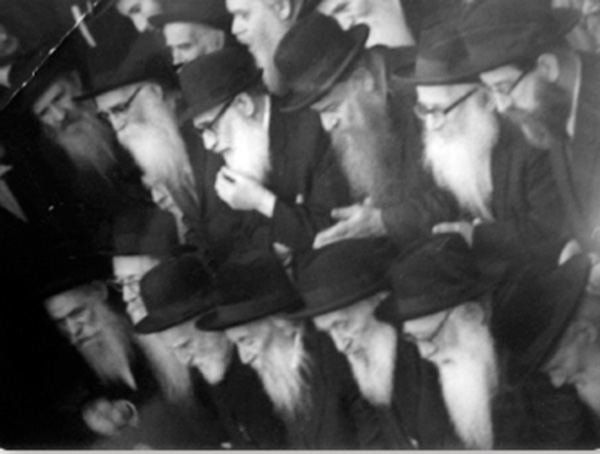

Spreading the Wellsprings on Three Continents
About the Chassid who was a mashgiach in yeshivos Tomchei T’mimim in Russia, Austria, and Australia and who became one of the greatest disseminators of Chassidus in New York. * To mark his passing on 27 Sivan.

The Chassid, R’ Abba Pliskin a”h was born in Politse in 5665/1905 (or 5667). He learned in yeshivas Tomchei T’mimim in Charkov and Nevel from 5685-5688. After the arrests at the yeshiva in Nevel, the talmidim of the upper class fled. Included were Abba Pliskin, Mendel Futerfas, and Nachum Goldschmidt. They arrived in Vitebsk where R’ Nachum was appointed as mashpia of the younger class and R’ Abba was appointed mashgiach of the yeshiva.
In 5694/1934, R’ Abba thought of moving to Eretz Yisroel. The Rebbe Rayatz approved this idea and wanted to know in which district he had submitted his request and whether he had the wherewithal to carry it out. In the end, the plan did not work out.
In 5702, when he fled from the war, and like many of his fellow Chassidim arrived in Samarkand, he and R’ Mendel Futerfas were appointed to run the yeshiva that had just been founded by R’ Michoel Teitelbaum and R’ Shmaryahu Sasonkin. The two of them greatly improved the yeshiva’s financial state and many talmidim joined the expanding yeshiva. The friendship between R’ Abba and R’ Mendel was a byword, even many years after they left Russia and met again in 770.
R’ Chanan Levin, who served in the Red army during the war, told of a miracle that happened to R’ Abba in those days. When he returned from the battlefield in Stalingrad at the end of the war, the trains were full of discharged soldiers. They were drunk on freedom and victory and they behaved like bloodthirsty animals. R’ Abba walked into one of the compartments and sat down. There was a group of Russian soldiers who were half-drunk and were amused by the idea of watching a little rabbi die when they would throw him onto the train tracks from the moving train. They were about to carry out their plan when R’ Chanan went over to them as he whispered a silent prayer. He threatened them that if they did not leave R’ Abba alone, he would shoot them all.
“Normally, this would have been interpreted as a convincing reason for them to do the same thing to me. However, they became fearful and left him alone. Both our lives were miraculously saved.”
TOMCHEI T’MIMIM ON A NEW CONTINENT
R’ Abba was able to leave Russia in 1947, when numerous Lubavitchers clandestinely escaped. He ended up in the DP camp in Paris. On his way there, he spent some time in Vienna where he ran the temporary Yeshivas Tomchei T’mimim that was set up there. Hundreds of Lubavitcher families who were in Paris after the war, including R’ Abba, were there on temporary visas.
Based on a general order from the Rebbe Rayatz, each Chassid sought a place to live and then asked for the Rebbe’s bracha. R’ Abba, together with a group of Chassidim, chose Australia.
In order to get a visa for Australia they had to have employment there with a guaranteed salary that would enable a family to live in dignity and not require government assistance. R’ Moshe Zalman Feiglin, the first Lubavitcher to settle in Australia in 5672, was able to obtain visas for seven Chassidishe families in Paris, those of: R’ Betzalel Wilschansky and his son-in-law R’ Dovid Perlov, R’ Isser Kluvgant, R’ Shmuel Betzalel Altheus, R’ Nachum Zalman Gurewitz, R’ Abba Pliskin, and R’ Zalman Serebryanski.
The Rebbe Rayatz thanked R’ Moshe Zalman Feiglin for his efforts and urged him to try and obtain even more visas for Lubavitcher families. The Rebbe wrote, “I am sure that, with Hashem’s help, they will bring much bracha to their country with the strengthening of all aspects of Judaism and making the country of Australia a place of Torah Temimah.”
From Paris, R’ Abba traveled by train with R’ Zalman Serebryanski and their families to Genoa, Italy, where they boarded a ship for Australia. R’ Moshe Zalman Feiglin’s children joyously welcomed them and hosted them with great honor.
In Melbourne they reunited with the Altheus, Kluvgant and Gurewitz families who had arrived several weeks or months before them. They were told that in Melbourne there were many opportunities to open a business, but the two Chassidim were not interested in business, but in building Chabad on the only continent where Chassidus had yet to reach.
When they first arrived, R’ Feiglin hosted them on his farm in Shepparton. The tiny community now had four Chassidim of stature: R’ Moshe Zalman Feiglin, R’ Betzalel Wilschansky, R’ Zalman Serebryanski, and R’ Abba. Most of the Jews on the farm were not religious and they came to shul on Shabbos in their cars. After years of spiritual isolation, R’ Moshe Zalman enjoyed much nachas from his fellow Chassidim. The Chassidim found work on the farm with R’ Abba undertaking gardening.
After Simchas Torah 5710/1949, a letter came from the Rebbe Rayatz in which he instructed them to start a yeshiva in Shepparton. A meeting was held in which they resolved to start a yeshiva with some wealthy people promising to support it.
R’ Abba devoted himself fully to the new yeshiva. He left gardening and learned with the three talmidim of the fledgling yeshiva.
In the months that followed, more talmidim joined. The Pliskin couple was the life of the yeshiva. R’ Abba served as mashpia and maggid shiur and his wife Pessia took care of the kitchen, not an easy job. Chalav Yisroel milk, for example, was not available in Shepparton. The bachurim had to raise a goat and from its milk she would make dairy products.
Along with his job as mashpia in the yeshiva, R’ Abba’s Chassidic heart could not bear the disconnect that Australian Jewish youth had from their roots. He asked the Rebbe whether he could change jobs from mashpia to working to be mekarev the youth. Another pressing matter was whether to send his daughter to the local school.
In the first letter he received from the new Rebbe, on 17 Elul of that year, the Rebbe referred to his job as mashpia and said his question was not yet of practical relevance since there was no one to take over his job as mashpia. As for his daughter, the Rebbe said they should try to form a class of girls and hire a teacher who would obviate the necessity of attending another school.
In an interview with Beis Moshiach, R’ Mordechai Bar Yosef described R’ Abba, the mashpia in the yeshiva he learned in:
“R’ Abba Pliskin was the mashgiach. He was a short, Chassidishe Yid who was full of charm and strength. I remember how we learned Tanya and maamarim every morning. There weren’t many sifrei Chassidus at the time and even those that existed were not easily obtainable. We farbrenged with him on every Chassidic special date in the calendar.”
That is how the large Chabad community in Melbourne began. Four-five Chassidim were the ones who built it up. R’ Serebryanski described life in the small community to the Rebbe, “We live near one another. Every Shabbos, before the davening, we learn Chassidus and on Shabbos Mevarchim we gather to say T’hillim, daven in a special minyan, and then have a kiddush and farbrengen.”
The Rebbe considered this k’hilla a shlichus as he wrote to R’ Abba in 5716:
“ … Regarding the class and how to run it, it is understood that from a distance it is hard to instruct regarding the details, but it is clear that the shlichus of every one of Anash without exception in Australia is to spread Chassidus, its ways and customs, and obviously, one of the main things is the development of the yeshiva in quality and quantity. From all this it is understood and obvious that you have a part of this work and the matter depends solely on contemplating the issue in a personal manner to find the most effective way to benefit the aforementioned work, and thus automatically your personal benefit and that of all your household, and nothing stands in the way of one’s will …”
The children were part of the shlichus and R’ Abba asked the Rebbe how his daughter, Rivka, could be a positive influence on her friends. The Rebbe responded:
“ … Surely as someone educated in a Chassidishe home, she has knowledge which some of her friends do not have. Also, surely there are children younger than her and she has the ability to influence them about Judaism in general. With the requisite contemplation I hope that you will instruct her in matters and approaches in this, and may Hashem grant success. With blessings for good news.”
One of the interesting instructions that R’ Abba received as a mashpia was one the Rebbe told him in yechidus, to tell bachurim “old Chassidishe stories.” The Rebbe asked him to infuse the bachurim with lachluchis (lit. moisture, what in English might be called Chassidic flavor) and stressed, “you need to tell stories of Chassidim who were Chassidic Jews and I mean [stories of] Chassidim specifically, not the Rebbeim. When you tell about a Rebbe there is the thought that this is incomparably distant, which is not the case when you tell of Chassidim – you learn from that.”
Another interesting instruction came in a letter in 5716, in response to a letter that he wrote to the Rebbe about various types of farbrengens. The Rebbe affirmed that there are indeed different kinds of farbrengens but said both should take place, i.e. not to do away with the type of farbrengen prevalent at the time, but to occasionally conduct a farbrengen in the old style.
In 5727, the Rebbe sent a special group of shluchim to strengthen the yeshiva in Melbourne for two years. R’ Abba, who was living in New York by that time, asked the Rebbe whether the talmidim-shluchim could be used for activities around the city. The Rebbe said, “You can ask talmidim of the yeshiva, but not the six who traveled from here as shluchim and on a special shlichus (the very question is shocking) except if it takes place outside of the s’darim.
BALABUS OVER AUSTRALIA
In the beginning of the 60’s, R’ Abba moved to New York. There too, he continued his work in shlichus when he became a dynamic part of FREE, an organization for Soviet Jews. R’ Efraim Wolf heard a most unusual phrase from R’ Chadakov, who was usually a cool and levelheaded person, about this work, “In the United States, R’ Abba Pliskin does a lot in this [strengthening the Judaism of Russian immigrants] and it is a pleasure to see his work.”
On Simchas Torah 5731/1970, the Rebbe appointed rabbis to be balabatim (in charge) over the seventy nations of the world for the purpose of transforming the UN resolutions for the good.
This began Friday night of Chol HaMoed Sukkos when the Rebbe went out to the sukka and said a maamer that began, “Hallelu es Hashem kol Goyim.” After the sicha, the Rebbe explained that since on Sukkos seventy bulls were sacrificed to correspond to the seventy nations, and on Sukkos of that year there was a meeting of the UN, therefore, just as the gentiles convened, so too, Jews had to convene in order to show that they are balabatim over the world.
In light of this, they decided that at the annual gathering of Tzeirei Chabad, which takes place on Chol HaMoed, at least one person from every country would speak and establish how that place should conduct itself. R’ Abba was chosen to represent Australia.
At the Yud-Tes Kislev farbrengen of 5731, the Rebbe asked that they make sure that the listeners to the broadcast of the farbrengen in Australia say l’chaim in a way that it would be heard simultaneously in 770. There were technical problems and the Rebbe suddenly asked, “Where is the balabus over Australia? He should say l’chaim for he was appointed over Australia. Did he forget that he is in charge?”
The Rebbe looked for R’ Abba and said, “R’ Abba, HaRav R’ Abba, Rav Pliskin, where are you hiding?”
R’ Abba passed away on 27 Sivan 5756/1996.
I NEED TO PREPARE FOR DAVENING
In the years 5715-5724 (1954-1963), the Rebbe would teach a new niggun the night of Simchas Torah, after hakafos, towards morning. He would give mashke to those who committed to increasing their study of Chassidus in the year to come.
In 5724, the Rebbe warned that only those who would actually increase their learning should take, and not like in previous years when people took mashke from the Rebbe and did not actually increase their learning. After this pronouncement, many refrained from taking mashke from the Rebbe.
R’ Abba Pliskin stood near the Rebbe and did not know whether to take mashke or not. Suddenly, the Rebbe said to him, “Don’t you want to take mashke? I have no time; I have to prepare for davening.”
That was at six in the morning and the Rebbe had already begun preparing for davening.
ENDLESS LOVE
R’ Abba said:
We read the pasuk, “I love you, says Hashem,” but we have not an inkling of an understanding of what this means. Hashem is infinite and His love and chesed are also infinite. What do we understand of infinity?
L’CHAIM HAS TO CHANGE YOU
One of the Chassidim visited R’ Abba when he was in an old age home and R’ Abba wanted to say l’chaim. In order to do so, he needed help to sit up. After they helped him sit up, they wanted to have him lie down again but R’ Abba protested, “So soon? After saying l’chaim you need to be a bit different than before!”
THREE NECESSARY CHANGES
R’ Meir Simcha Chein quoted this from R’ Abba:
Three things must have an effect: mashke, money, and Chassidus. Mashke makes you drunk; money makes you crazy, and Chassidus makes you refined. If one of these doesn’t work, it’s a sign you don’t have enough of it – either you did not drink enough, or you don’t have enough money, or you did not learn enough Chassidus.
R’ ABBA’S EXPLANATION OF RASHI
At a Chassidishe farbrengen, R’ Abba once said:
Although Chassidim accept the Rebbe’s inyanim with simple faith, sometimes it is also good to understand what the Rebbe says. The Megilla tells us that Mordechai was “favored by most of his brethren.” The question is known, the Megilla comes to tell us of Mordechai’s praise so why does it tell us he was favored by only most of his brethren, as Rashi says, “and not all his brethren?”
Mordechai’s words were on such a high level that not everybody could understand them. The same is true for the Rebbe. There are those who complain and do not understand what the Rebbe wants. This is because the matters are so lofty that they are beyond our comprehension.
Another Rashi that we can explain this way is on the pasuk, “VaYachel Noach.” Rashi says, “He made himself profane.” That is the idea of a Chassidishe farbrengen. When you drink as Noach did, the world sees this as something profane. However, the truth is that this is a lofty matter but it is not grasped within the vessels of worldly intelligence.
Beis Moshiach (staff). "Spreading the Wellsprings on Three Continents." Beis Moshiach, no. 881 (May 30, 2013).